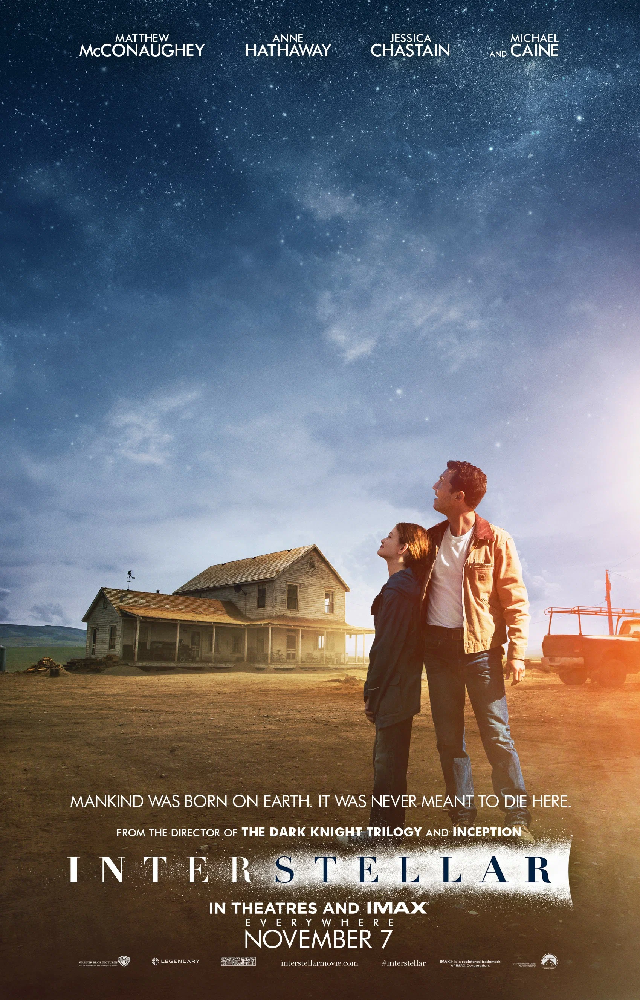

Dirección
Christopher Nolan
Producción
Emma Thomas, Christopher Nolan, Lynda Obst
Guion
Jonathan Nolan, Christopher Nolan
País
Estados Unidos, Reino Unido, Canadá
Año
2014
Género
Ciencia ficción, Ciencia ficción apocalíptica, Drama, Distopía, Space opera, Épica
Duración
169 minutos
